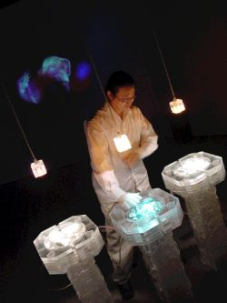
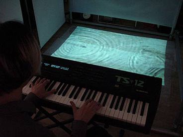
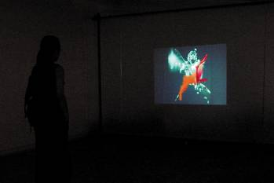

I continuously believed that an artificial life can be a performer and a part of an art installation in media arts.
I had conducted three media art projects at Samsung Software Membership.
Samsung Software Membership (SSM, http://secmem.org) : A private institute run by Samsung Electronics Co. to promote research activities among undergraduates.
Trialogue 2001

Trialogue was a big team-based work to make three participants, a live fish, a human, and an artificial life, perform together in one stage. An art director, a composer, software engineers, an interface designer, and a hardware specialist took participated in this project. I, particulary as a software engiineer, designed a simple AI engine for the artificial character 'Vau'. During the beginning of design of this project, I suggested to make an artificial life and a real fish participate in this project instead of just two who were a human and a machine. Moreover, I wanted to add emotions instead of just reacting to stimuli.However, due to lack of knowledge and understanding in human emotion, I was not successful enough to embed true emotions in this project.
- Programmed an interface program between the human interface and the 3D engine.
- Tried to embed emotions in the created artificial life, 'Vau'.
- Used Visual Studio 6.0 in Window Platform.
Ripple of Emotion (Liquid Media) 2000

Liquid Media was an interactive instrument which manipulates not only the sound but images. It was like playing a piano in front of a pond which rippled in accordance with the keys that the player had touched. We installed a beam projector which was facing toward the ground. It was refracted through the water pool we installed in between the ground and the beam projector. Two robot arms on each side of the pool moved in relation with the touched keynotes. They made ripples on the surface of the water pool. I programmed an interface between MIDI keyboard and the robot arms.
- Was a new type of an instrument which plays not only sounds but also images.
- Programmed an interface between a MIDI keyboard and robot arms.
- Used Visual Studio 6.0 in Window Platform.
Polymorphes 2000

Polymorphes was my first media art installation that I took participated in. It was a synthesis of both images and sounds with a simulataneous interaction with a machine. In a box shaped room, an audience can move in order to change the images in the facing screen and the sounds that came out from speakers. I programmed an interface between camera and images. Also, I programmed a music player which played short sound clips based on the audience's location. Wave clips were played and stoped whenever an audience enters certain areas.
- Was a new type of an art installation which has not only images but sounds.
- Programmed a music player which played sound clips in accordance with the audiences movement.
- Used Visual Studio 6.0 in Window Platform with Direct X for the sound mixing.